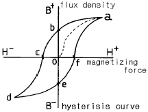
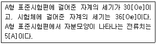
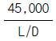
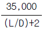
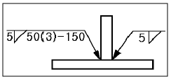

자기비파괴검사기사(구) (2003-03-16 기출문제)
1과목: 자기탐상시험원리
1. 그림에서 항자력(coercive force)의 크기를 나타내는 부분은?

- o-a
- o-b
- o-c
- b-e
(정답률: 알수없음)

2. 자기투자율은 자속밀도 B를 자장 H로 나눈 값으로 정의한다. 이 때 투자율의 단위를 나타낸 것은?
- Ohm.sec
- Volt.sec/m2
- Weber/m2
- Henry/m
(정답률: 알수없음)
3. 일반적으로 자기탐상검사의 시기는 언제로 하는가?
- 가공이 완료되기 전, 최종 열처리 후에
- 가공이 완료된 후, 최종 열처리 후에
- 가공이 완료된 후, 최종 열처리 전에
- 가공이 완료된 후, 열처리 전,후 아무 때나
(정답률: 알수없음)
4. 이음매없는 강관(seamless steel tube)의 생산공정 중 제조결함 검출을 위한 비파괴검사법으로, 한번에 전 표면을 검사할 수 있으며 자동화가 가능한 이 비파괴검사법은?
- 침투탐상시험
- 자분탐상시험
- 와전류탐상시험
- 음향방출시험
(정답률: 알수없음)
5. 습식형광 자분탐상이 비형광 자분탐상에 비하여 장점인 것은?
- 검사의 정확성을 높일 수 있다.
- 다수의 작업장에서 형광등이 표준조명이므로 활용상 편리하다.
- 시험품이 대형일 때 유리하다.
- 시험품이 비자성체일 때 검사속도를 빠르게 한다.
(정답률: 알수없음)
6. 자속밀도를 영(zero)으로 하기 위한 자화력을 무엇이라 하는가?
- 항자력(coercive force)
- 자기유도(magnetic inductance)
- 자기 저항(magnetic resistance)
- 포화 자화(saturation magnetization)
(정답률: 알수없음)
7. 외부 자장에 의해 재료 내부에 외부 자장의 방향과 반대방향으로 자기모멘트가 유도되어 자석에 반발되는 재료의 성질을 무엇이라 하는가?
- 강자성
- 상자성
- 반자성
- 비자성
(정답률: 알수없음)
8. 자화방법 선택시 고려 사항을 열거한 것이다. 적합하지 않은 것은?
- 예측되는 방향에 대하여 자계의 방향이 직각이 되는 자화방법을 선택한다.
- 자계의 방향을 시험면에 가급적 평형이 되도록 한다.
- 잔류법에 의한 시험의 경우는 교류자화를 하여야 한다.
- 대형시험체는 분할하여 국부적으로 자화시킬 수 있는 자화방법을 선택한다.
(정답률: 알수없음)
9. 올바른 전처리는 자분탐상시험 결과에 큰 영향을 미치는 공정이다. 다음 중 전처리의 목적이 아닌 것은?
- 탐상시험에 관계되는 조작으로부터 시험품의 손상을 방지한다.
- 예상되는 지시를 사전에 발견하여 탐상시험을 생략할 수 있게 한다.
- 탐상시험을 방해하는 이물질을 제거하여 탐상을 쉽게 한다.
- 결함 이외의 부분에 부착되는 자분의 양을 줄여 지시모양의 관찰을 용이하게 한다.
(정답률: 알수없음)
10. 자장계는 무엇을 결정하기 위해서 사용되는가?
- 부품에 잔존하는 잔류자기의 양
- 자장의 방향
- 자장의 전체적인 벡터량
- 자장의 한계
(정답률: 알수없음)
11. 누설자속의 발생에 영향을 미치는 인자가 아닌 것은?
- 자화방향과 결함길이 방향과의 각도
- 자성체의 재질
- 자화의 강도
- 자성체의 크기
(정답률: 알수없음)
12. 투자율(μ)이 500Gauss/Oe인 자성체에 자계의 세기가 2,000[A/m]인 곳에서의 자속밀도는?
- 1.257Wb/m2
- 12.57Wb/m2
- 1.257Gauss
- 12.57Gauss
(정답률: 알수없음)
13. 자화이력곡선에서 자화전류가 0일 때 자속밀도도 0 이 되도록 하려면 어떻게 해야 하는가?
- 검사품을 적당하게 가열
- 탈자
- 처음 자화된 것에 반대 방향으로 다시 자화
- 처음 자화된 것보다 낮은 잔류로 자화
(정답률: 알수없음)
14. 다음 중 투자율이 공기보다 매우 높고, 자석에 강하게 끌리는 이 재료는?
- 반자성체
- 비자성체
- 상자성체
- 강자성체
(정답률: 알수없음)
15. 아래 조건의 시험체에 자분모양이 나타나도록 적용할 자화전류치는?

- 2.16[A]
- 4.52[A]
- 6.00[A]
- 8.14[A]
(정답률: 알수없음)
16. 비파괴검사중 체적검사로만 묶여진 것은?
- 자기탐상검사, 와전류탐상검사
- 침투탐상검사, 누설검사
- 방사선투과검사, 초음파탐상검사
- 육안검사, 굽힘시험
(정답률: 알수없음)
17. 강(steel)에 대한 자기 특성을 설명한 것으로 올바른 것은?
- 강자성 재료의 자기적 특성은 온도에 무관하다.
- 강의 탄소 함유량이 낮을수록 보자력이 크게 된다.
- 강재의 자화곡선은 탄소 함유량에 따라 크게 변하므로 가공 상태에는 영향을 받지 않는다.
- 담금질(quenching)한 강은 풀림(annealing)한 강보다 일반적으로 투자율은 작다.
(정답률: 알수없음)
18. 다음 중 자분탐상검사의 적용이 가장 효율적인 것은?
- 오스테나이트계 환봉의 표면 결함검출
- 상자성체의 시험체를 교류를 사용하여 표면의 결함검출
- 아연 재질의 용접부 표면의 결함검출
- 니켈 재질 기계부품의 표면 결함검출
(정답률: 알수없음)
19. 다음 중 자화방법에 대한 설명으로 틀린 것은?
- 코일법은 반자장의 영향을 고려해 주어야 한다.
- 시험체에 직접 통전하는 자화 방법인 경우에는 도체 패드 등을 사용하기도 한다.
- 자속 관통법인 경우 자화 전류로 직류를 사용할 수도 있다.
- 극간법은 선형 자장을 형성하는 방법이다.
(정답률: 알수없음)
20. 자분탐상시험시 안전과 관련하여 주의할 내용으로 틀린것은?
- 전기 아크가 발생되지 않도록 주의
- 습식 자분의 오일 용매의 장시간 피부접촉 방지
- 자외선등의 자외선이 직접 눈에 조사되지 않게 주의
- 잔류법 적용시 작업자는 TLD를 부착토록 조치
(정답률: 알수없음)
2과목: 자기탐상검사
21. 형광습식자분탐상검사시 지름이 20mm정도 되는 철봉을 코일법으로 검사하는데 원주방향의 한면에서 미세한 균열과 같은 자분모양이 나타났다. 다른 탐상방법으로 확인한 결과 분명히 균열이 아님이 확인되었다. 그렇다면 이 자분모양은 다음 중 어느 것에 해당된다고 판단되는가?
- 냉간작업지시(Cold Working)
- 재질경계지시
- 자기펜 자국(Magnetic Writing)
- 압출심 지시
(정답률: 알수없음)
22. 다음 중 교류, 직류를 불문하고 자분적용에 있어 가장 좋은 검출감도를 갖는 자분은?
- 건식형광자분
- 습식형광자분
- 건식비형광자분
- 습식비형광자분
(정답률: 알수없음)
23. 대형 압력용기의 용접부위(두께30mm) 보수검사를 하는데자분탐상시험으로 가장 적합한 시험 조건은?
- 교류극간법, 건식법, 연속법
- 교류극간법, 습식법, 잔류법
- 직류극간법, 습식법, 연속법
- 직류극간법, 건식법, 잔류법
(정답률: 알수없음)
24. 자분탐상검사와 관련된 장비중 가우스메터(Gauss Meter)는 어떤 용도로 사용되는가?
- 자계 방향을 측정하여 결함의 검출능력을 도와주는 것이다.
- 탈자가 되었는지를 조사하는 장치이며 얇은 금속판에 구리판을 입혀 인공흠을 가공하는 것이다.
- 국부적인 공간의 자계나 누설자속밀도를 측정하는 것이다.
- 결함 부위에 발생한 자속을 정밀하게 측정하여 그 결함의 크기를 정확히 나타낼 수 있는 것이다.
(정답률: 알수없음)
25. prod형 자분탐상기의 cable이나 도선으로 시험체의 둘레를 감았을 때 시험체에 유도되는 자계의 형태는?
- 원형자계
- 전자자계
- 선형자계
- 방사선형자계
(정답률: 알수없음)
26. 극간법으로 강용접부를 자분탐상시험하는 경우, 그 적용이 올바른 것은?
- 탐상유효범위는 예상되는 결함의 방향에 대하여 자계의 방향과 수평되게 한다.
- 휴대형 극간식 탐상기는 통상의 접촉상태에서 자극 주위의 2∼3mm가 불감대역이다.
- 자화전류 치는 자극 1인치당 70∼100A의 범위이다.
- 자계의 강도는 전류치와 자극간격에 따라 자유롭게 변한다.
(정답률: 알수없음)
27. 투자율이 다른 재질경계의 의사모양의 판별을 위한 제일 바람직한 방법은?
- 탈자후 재검사한다.
- 표면을 연마하고 약품으로 부식후 금속 현미경에 의한 미시적 시험을 한다.
- 자극의 위치 또는 전극의 위치를 바꾸어 재자화한다.
- 자화 정도를 낮추어 잔류법으로 시험한다.
(정답률: 알수없음)
28. 다음 중 홀효과(Hall effect)를 틀리게 기술한 것은?
- 얇은 철판으로 실험할 수 있다.
- 전류의 흐름과 자계의 흐름을 직각으로 할 때 발생한다.
- 자계와 전압의 관계에서 발생한다.
- 자계의 방향과 세기를 측정할 수 있다.
(정답률: 알수없음)
29. 자분탐상검사에 영향을 미치는 자분의 성질을 서술한 것이다. 잘못된 것은?
- 투자율이 높고, 보자력이 작은 자분이 요구된다.
- 자분입도의 선택은 자분탐상시험의 여러 조건을 고려하여야 한다.
- 비중이 낮은 자분이 결함부로의 흡착성이 좋다.
- 자분의 자기적성질은 자분의 분산성과 흡착성에 영향을 준다.
(정답률: 알수없음)
30. 자분탐상시험시 직류를 사용하여 자분모양이 발견되었을 때 이 자분모양이 표면 또는 표면직하인가를 확인하기 위한 조치로 올바른 것은?
- 자분모양을 관찰, 제거한 후 시험체의 표면을 세심하게 육안 검사한다.
- 직류로 재시험한다.
- 교류로 재시험한다.
- 충격전류로 재시험한다.
(정답률: 알수없음)
31. 습식자분의 점도(Viscosity)는 38℃(100° F)에서 몇 Centistokes를 초과해서는 안되는가?
- 1
- 5
- 10
- 15
(정답률: 알수없음)
32. 다음 중 자분탐상시험후 시험기록의 표기방법이 옳은 것은?
- EA ∼ 2,000 : 축통전법, 2000A의 직류전류 사용
- C ∧ 3,000 : 코일법, 3000A의 교류전류 사용
- P - 1,500 꿴 : 프로드법, 1500A의 직류전류 사용, 탈자실시
- I ∧2,000 꿴 : 전류관통법, 2000A의 충격전류 사용, 탈자실시
(정답률: 알수없음)
33. 교류(AC)를 이용한 탈자의 장점이 아닌 것은?
- 작거나 가벼운 부품의 탈자에 좋다.
- 많은 량의 부품의 탈자에 좋다.
- 복잡한 구조의 부품 탈자에 좋다.
- 직경 1‾2인치(25‾50mm)정도 부품의 탈자에 좋다.
(정답률: 알수없음)
34. 다음 중 상호간의 단위가 틀린 것은?
- 투자율(μ) : H/m(= Henry/meter)
- Oersted(Oe) : A/m
- 자속(φ) : Gauss
- 자속밀도(B) : Wb/m2
(정답률: 알수없음)
35. 자분탐상시험에서 자화방법의 선택에 있어 제일 먼저 고려해야 할 사항은?
- 시험체의 크기
- 자계의 방향
- 전류의 형태
- 자속 밀도
(정답률: 알수없음)
36. 길이 6인치, 직경 2인치인 봉을 선형자화법인 코일법으로 검사하고자 할 때 5회의 코일을 감아 사용하였다면 이 때의 전류치[A]로 적당한 것은?
- 1200[A]
- 2000[A]
- 3000[A]
- 6000[A]
(정답률: 알수없음)
37. 비형광에 의한 자분탐상시험을 했을 때 시험체에 자분모양이 관찰되었다. 이 때 자분모양에서 반사되는 빛의 강도는 정상적인 경우 입사광의 몇 %정도가 되어야 하는가?
- 1∼2%
- 3∼8%
- 10∼13%
- 15%이상
(정답률: 알수없음)
38. 다음 중 자분탐상시험시 피로 균열의 검사를 위해 가장 적합한 자화전류는?
- 교류
- 직류
- 반파 직류
- 전파 정류한 직류
(정답률: 알수없음)
39. A형 표준시험편의 사용방법으로서 옳은 것은?
- 표준시험편과 검사면의 접촉상태는 매우 중요하며, 약 1mm 정도의 간격이 필요하다.
- 표준시험편의 인공홈이 없는 면을 바깥으로 하여 시험면에 접촉시켜야 한다.
- 접착성 테이프로 접촉시킬 경우는 테이프가 인공홈 부위를 완전히 덮도록 해야 한다.
- 일반적으로 잔류법에 사용한다.
(정답률: 알수없음)
40. 자분탐상시험시 의사모양의 원인이 아닌 것은?
- 과도한 자화 전류
- 시험체의 구조적 형태
- 시험체 내부의 투자율
- 거친 표면을 가진 시험체
(정답률: 알수없음)
3과목: 자기탐상관련규격및컴퓨터활용
41. 윈도우 바탕화면의 등록정보에서 변경할 수 없는 것은?
- 배경
- 보호기
- 네트워크
- 배색
(정답률: 알수없음)
42. 크기가 2mm인 원형지시 4개가 일렬로 배열되어 검출되었을 때 ASME Sec.Ⅷ, Div.1에 의해 불합격으로 판정할 수 있는 최대 결함사이 간격의 합은?
- 1/8 인치
- 3/16 인치
- 1/4 인치
- 5/16 인치
(정답률: 알수없음)
43. KS D 0213의 용어설명 중 "주기적으로 크기가 변화(극성은 불변)하는 자화전류"란?
- 택류
- 정류
- 교류
- 충격전류
(정답률: 알수없음)
44. KS D 0213에 의한 자분탐상시험시 시험면을 분할하여 시험하는 경우의 설명으로 잘못된 것은?
- 시험체가 너무 커서 1회의 자화로 시험이 어려울 때
- 시험체의 길이가 작아 교류를 사용하여 연속법으로 자화할 때
- 시험체의 단면이 급변하여 유효자계강도가 미약할 때
- 시험체의 모양이 복잡하여 1회의 자화로 자계강도를 시험면 전부에 가할수 없을 때
(정답률: 알수없음)
45. KS D 0213의 자외선조사 장치에 관한 사항중 틀린 것은?
- 자외선 조사장치의 필터면에서 38cm 떨어진 거리의 자외선 강도는 1000㎼/cm2이상이어야 한다.
- 근자외선 강도측정은 자외선 강도계를 사용한다.
- 수은등이 누설이 있을 경우는 수리 또는 폐기한다.
- 1년이상 사용하지 않을 경우에는 사용시에 점검한다.
(정답률: 알수없음)
46. 컴퓨터로 할 수 있는 일을 수행하는 프로그램들 중 기능상 성격이 다른 것은?
- dBASEIII+
- MS-Access
- Fox-Pro
- Lotus-123
(정답률: 알수없음)
47. KS D 0213에 따라 형광자분을 사용하여 시험할 때 관찰면의 밝기는 몇 룩스(Lux)이하이어야 하는가?
- 20룩스(Lux)
- 30룩스(Lux)
- 50룩스(Lux)
- 90룩스(Lux)
(정답률: 알수없음)
48. ASME 규격에서 건식자분을 사용하여 시험할 때 시험체 표면의 온도가 어느 온도 이상을 초과해서는 안되는가?
- 57℃
- 107℃
- 225℃
- 316℃
(정답률: 알수없음)
49. 전처리 범위에 대해서 KS D 0213에 규정한 내용은?
- 시험범위와 일치한다.
- 용접부의 경우에는 시험범위 + 모재측 20㎜
- 시험범위 ± 5㎜
- 용접부의 경우에는 시험범위 + 모재측 30㎜
(정답률: 알수없음)
50. ASME Sec.V, art.7의 규정에 따라 외경 1인치인 검사체를 전류관통법에 의한 자화시 자화전류[A]는?
- 약 3200
- 약 1600
- 약 800
- 약 200
(정답률: 알수없음)
51. KS D 0213에 의한 각각의 선상의 자분모양 및 원형상의 자분모양은 어떤 자분모양의 분류에 속하는가?
- 연속한 자분모양
- 균열에 의한 자분모양
- 분산한 자분모양
- 독립한 자분모양
(정답률: 알수없음)
52. ASTM E 709에 의한 교류 전자석 요크형 자분탐상기의 견 인력(Lifting power)의 교정 값은?
- 10lb(4.5㎏)
- 20lb(9.0㎏)
- 30lb(13.5㎏)
- 40lb(18.1㎏)
(정답률: 알수없음)
53. Windows 98에서 [디스크조각모음]을 하는 목적은?
- 물리적 오류를 검사하기 위하여
- 논리적 오류를 검사하기 위하여
- 손상된 파일을 복구하기 위하여
- 프로그램을 더욱 빠르게 실행하기 위하여
(정답률: 알수없음)
54. ASME Sec.V, art.7에서 규정하고 있는 자화방법에 해당되지 않는 것은?
- Prod법
- 선형 자화법
- 원형 자화법
- 축 통전법
(정답률: 알수없음)
55. KS D 0213에서 A형(원형) 표준시험편에서 원의 직경은?
- ø5mm
- ø10mm
- ø15mm
- ø20mm
(정답률: 알수없음)
56. ASME Sec.Ⅷ, App.6의 합격기준치에 따라 자분탐상시험의 결함지시를 평가할 경우 다음 중 합격인 결함은?
- 크기가 1/8″ 인 원형지시
- 길이가 1/8″ 인 선형지시
- 길이가 3/16″ 인 선형지시
- 서로 떨어진 거리가 1/16″ 이고 길이가 1/8″ 인 4개 이상의 원형지시가 있는 경우
(정답률: 알수없음)
57. Windows98에서 Window 종료 대화상자 중 시스템의 전원을 내리지 않고 최소한의 전력을 사용하는 상태로 두는 시스템 종료 방법으로 다시 원래의 화면으로 돌아오려면 마우스를 클릭하거나 키보드를 누르면 되는 것은?
- 시스템 대기
- MS-DOS 모드에서 시스템 다시 시작
- 시스템 다시 시작
- 시스템 중지
(정답률: 알수없음)
58. 다음 중 자기 스스로를 계속 복제하므로서 시스템의 부하를 증가시켜 결국 시스템을 다운시키는 프로그램은?
- Spoof
- Authentication
- Worm
- Sniffing
(정답률: 알수없음)
59. ASME Sec.V, Art.7에서 규정한 선형자화법으로 자분탐상 시험할 때 L/D = 5인 시험체의 경우에는 별도로 자화전류를 규정하고 있다. 이 규정 자화전류 값을 바르게 나타낸것은? (단, L은 시험체 길이, D는 시험체의 직경을 나타냄)
- 암페어.턴=

- 암페어.턴=

- 1000∼2000암페어.턴
- 1200∼4500암페어.턴
(정답률: 알수없음)
60. 두께가 19mm(3/4인치)보다 두꺼운 경우 프로드 간격 1인치당 소요 암페어는?
- 100 ∼ 125 암페어
- 100 ∼ 125 암페어.턴
- 150 ∼ 200 암페어
- 150 ∼ 200 암페어.턴
(정답률: 알수없음)
4과목: 금속재료학
61. 입자분산강화금속(PSM)의 제조방법이 아닌 것은?
- 내부산화법
- 열분해법
- 풀몰드 주조법
- 용융체 포화법
(정답률: 알수없음)
62. WC-TiC, WC-TaC 분말과 Co 분말을 혼합, 압축성형 후 약 900℃정도로 수소나 진공 분위기에서 가열하여 1400℃ 사이에서 소결시켜 절삭 공구로 이용되는 금속은?
- 스텔라이트
- 고속도강
- 초경합금
- 모넬메탈
(정답률: 알수없음)
63. 강에 첨가된 B 의 특징이 잘못된 것은?
- 경화능을 개선시킨다.
- 질량효과를 증대시킨다.
- O2및 N2와의 친화력이 강해진다.
- 모합금으로써 첨가해야 한다.
(정답률: 알수없음)
64. 탄소강이나 저합금강에서 시효(時效)를 받지 않고 있는 Martensite(virgin martensite)의 결정구조는?
- 면심입방정
- 체심정방정
- 조밀육방정
- 사방정
(정답률: 알수없음)
65. 라우탈(lautal)의 합금 성분으로 맞는 것은?
- Cu -Si-P
- Aℓ -Ni-Pb
- Aℓ -Cu-Si
- W -V -Mg
(정답률: 알수없음)
66. 18 - 8 스테인리스강의 결정입계에 석출하여 입간부식(intergranular corrosion)을 일으키는 것은?
- 황화물 입자
- 질화물 입자
- 산화물 입자
- 탄화물 입자
(정답률: 알수없음)
67. 마우러(maurer)의 조직도와 관련이 깊은 것은?
- Fe와 Mn
- C와 Si
- Cu와 Sn
- Ca와 Pb
(정답률: 알수없음)
68. 합금의 시효경화는 용질원자에 의하여 단위운동에 대한 저항에 원인이 된다.이 저항력의 크기 결정과 관련이 가장 적은 것은?
- 용질원자의 집합상태
- 용질원자의 크기
- 입자간의 평균거리
- 결정입계의 색깔
(정답률: 알수없음)
69. 금속의 결정구조가 불규칙 상태에서 규칙 상태로 변태 되었을 때 재질에 미치는 영향은?
- 경도(硬度)가 감소한다.
- 연성(延性)이 낮아진다.
- 강도(强度)가 낮아진다.
- 전기 전도도가 감소한다.
(정답률: 알수없음)
70. 합금강의 오스포오밍의 설명이 맞는 것은?
- 오스테나이트강을 재결정 온도 이하, Ms 점 이상의 온도범위에서 소성가공한 후 담금질한 것이다.
- 시멘타이트 변태온도 이상에서 담금질 하여야 한다.
- 경화의 주요인은 페라이트의 조대화에 있다.
- 열처리 후 조직은 마텐자이트입자의 조대화로 강도가 저하된다.
(정답률: 알수없음)
71. 0.4 wt% C 만을 함유한 탄소강을 평형 냉각시켰을때 상온에서의 경도는? (단,Ferrite의 경도는 80 HB, Pearlite의 경도는 300 HB, 공석 조성은 0.8 wt% C로 한다.)
- 90 HB
- 150 HB
- 190 HB
- 240 HB
(정답률: 알수없음)
72. 아연합금 중 ZAMAK 합금은?
- 다이캐스팅용 합금
- 가공용 합금
- 금형용 합금
- 고망간 합금
(정답률: 알수없음)
73. 강재에 혼입되는 불순물 중에서 상온 취성에 가장 큰 영향을 미치는 원소는?
- P
- S
- As
- Sn
(정답률: 알수없음)
74. 실용 동합금의 2원계 상태도에서 청동형에 대한 설명 중 맞는 것은?
- 공정변태한 것으로 시효성합금의 특수황동이라고도 한다.
- 포정 반응으로 생긴 β 가 상온까지 존재하므로 실용합금은 α 상 혹은 α +β 상의 조직이다.
- 공석 변태가 존재하며 이 공석 변태는 담금질로 방지할 수 있다.
- 청동형에는 Cu - Pb, Cu - Zn, Cu - Ag 등이 있다.
(정답률: 알수없음)
75. 침탄용강의 구비조건에 해당되지 않는 것은?
- 저 탄소강이어야 한다.
- 침탄시에 고온에서 장시간 가열하여도 결정입자가 성장하지 않는 강이어야 한다.
- 표면에 결점이 없어야 한다.
- 고 탄소공구강이어야 한다.
(정답률: 알수없음)
76. 베이나이트와 마텐자이트에 관한 설명이 틀린 것은?
- 공석강은 750℃이상의 온도에서 항온 변태시켜야 베이나이트가 형성되기 시작한다.
- 마텐자이트변태에서 Ms와 Mf 사이의 온도구간은 보통 200∼300℃ 이다.
- 마텐자이트는〔γ〕에서 일어나는 전단응력에 의해서 생성한다.
- 마텐자이트는 침상조직으로 성장한다.
(정답률: 알수없음)
77. 중성자를 잘 통과 시키므로 원자로 연료의 피복제, 중성자의 반사제나 원자핵 분열기에 이용되는 금속은?
- Ge
- Be
- Si
- Te
(정답률: 알수없음)
78. 구상흑연주철을 사형주조(sand casting)시 Pin hole 결함의 발생원인은? (단, 이 주철은 Mg 처리에 의하여 제조하는 것으로 함)
- 주형사(sand mold)의 수분(水分)이 부족하여
- 주형사의 통기도가 높아서
- 겨울철에 대기중의 수분이 낮아서
- Mg 처리량이 과다(過多)할 때
(정답률: 알수없음)
79. 황동에서 자연균열을 방지하려면 어떻게 하여야 하는가?
- 암모니아 분위기로 한다.
- 아연, 산소, 탄산가스 등을 증가시킨다.
- 200∼250℃에서 풀림하여 내부응력을 제거한다.
- 수은이나 그 화합물을 첨가한다.
(정답률: 알수없음)
80. 포석형(RC130B 또는 C-130AM 이라함)의 풀림재로서 인장강도 100 Kgf/mm2, 연신율 15% 인 합금은?
- Fe - Mn 계
- Ti - Aℓ 계
- Zn - Mg 계
- Aℓ - Si 계
(정답률: 알수없음)
5과목: 용접일반
81. 보기의 KS 용접 도시기호를 올바르게 해석한 것은?

- 양쪽 모두 단속용접
- 단속용접 용접수는 3
- 용접 피치는 50㎜
- 용접 길이는 150㎜
(정답률: 알수없음)
82. 주철의 용접이 연강에 비하여 대단히 곤란한 이유로서 적합하지 않는 사항은?
- 예열하지 않는 용접에서는 냉각속도가 느리므로 담금질 경화가 되지 않는다.
- 일산화 탄소가스가 발생되어 용착금속에 기공이 생기기 쉽다.
- 장시간 가열하여 흑연이 조대화된 경우 모재와의 친화력이 나쁘다.
- 용융상태에서 급냉하면 백선화되어 수축이 큰 잔류응력이 발생되어 균열이 생기기 쉽다.
(정답률: 알수없음)
83. 용접시 생길 수 있는 수축 변형을 감소시키는 방법으로 비드를 두들겨서 용착금속이 늘어나게 하여 용착금속의 수축을 방지하여 변형을 감소시키는 방법은?
- 피닝법
- 케스케이드법
- 도열법
- 빌드업법
(정답률: 알수없음)
84. 피복 아크용접에서 아크 전압이 30V, 아크 전류가 150A, 용접속도는 20cm/min일 때 용접부에 주어지는 용접 입열량은 몇 Joule/cm 인가?
- 225
- 1350
- 22500
- 13500
(정답률: 알수없음)
85. 아크용접에서 아크쏠림(arc blow)을 방지하기 위한 조치사항으로 틀린 것은?
- 직류(DC)용접기 대신 교류(AC)용접기를 사용한다.
- 접지점을 멀리하여 위치를 바꾼다.
- 가접을 크게하고 아크길이를 짧게한다.
- 용접전류를 낮추고 용접속도를 빠르게 한다.
(정답률: 알수없음)
86. 직류 아크용접기의 특성 설명 중 잘못된 것은?
- 극성 선택이 가능하다.
- 자기 쏠림이 없다.
- 역률이 양호하다.
- 비피복봉 사용이 가능하다.
(정답률: 알수없음)
87. 내용적 50ℓ 의 산소용기에 고압력계는 120기압 일 때, 프랑스식 200번 팁으로 몇시간 용접할 수 있는가? (단, 가스 혼합비는 1 : 1 이다.)
- 5시간
- 30시간
- 15시간
- 60시간
(정답률: 알수없음)
88. 다음 중 점 용접법의 종류가 아닌 것은?
- 단극식 점용접
- 다전극식 점용접
- 저압식 점용접
- 맥동식 점용접
(정답률: 알수없음)
89. 다음 용접 중 알루미늄 합금이나 마그네슘 합금 등의 용접에 가장 적합한 것은?
- 서브머지드 용접
- 탄산가스 아크 용접
- 불활성가스 용접의 직류 정극성 용접
- 불활성가스 용접의 직류 역극성 용접
(정답률: 알수없음)
90. 전기저항 용접에서 용접성에 영향을 가장 적게 미치는 인자는?
- 전류
- 전압
- 가압력
- 통전시간
(정답률: 알수없음)
91. 용접균열은 발생장소에 따라서 용접금속 균열과 열영향부 균열로 대별된다. 다음 중 용접 비드 종점에서 흔히 볼수 있는 고온 균열로 열영향부 균열이 아닌 것은?
- 비드 밑 균열(under bead crack)
- 토 균열(toe crack)
- 층상 균열(lamellar tear)
- 크레이터 균열(crater crack)
(정답률: 알수없음)
92. 다음 중 서브머지드 아크 용접법의 장점 설명으로 틀린것은?
- 용입이 깊다.
- 비드 외관이 매우 아름답다.
- 용융속도 및 용착속도가 빠르다.
- 적용재료에 제한을 받지 않는다.
(정답률: 알수없음)
93. 탄산가스 아크용접 용극식에서 일반적으로 사용되는 보호 가스가 아닌 것은?
- CO2 + O2
- CO2 + Ar
- CO2 + N2
- CO2 + Ar + O2
(정답률: 알수없음)
94. 다음 가스절단 팁(Tip)의 절단산소 구멍의 종류 중에서 후판을 절단하는데 가장 많이 이용되는 것은?
- 직선형 노즐
- 스트레이트 노즐
- 다이버전트 노즐
- 저속 다이버전트 노즐
(정답률: 알수없음)
95. 수소와 질소가 용접부에 미치는 다음의 영향 중 질소의 영향으로 가장 적합한 것은?
- 금속 파면에 선상 조직을 일으킨다.
- 파면에 은점이 나타난다.
- 저온 뜨임시 시효 경화현상이 나타난다.
- 비드 언더 (bead under) 크랙을 유발한다.
(정답률: 알수없음)
96. AW 300의 아크 용접기로 220[A]의 용접전류를 사용하여 10시간 용접했다. 이 경우 허용 사용율은 약 몇 % 인가?(단, 용접기의 정격 사용율은 45(%)이다.)
- 83.7
- 837
- 61.4
- 614
(정답률: 알수없음)
97. 교류 아크 용접기에서 AW300 이란 표시가 뜻하는 것은?
- 2차 최대 전류 300A
- 정격 2차 전류 300A
- 최고 2차 무부하 전압 300A
- 정격 사용률 300A
(정답률: 알수없음)
98. 기공 또는 용융 금속이 튀는 현상이 발생한 결과, 용접부 바깥면에서 나타나는 작고 오목한 구멍을 뜻하는 용어는?
- 피트(pit)
- 크레이터(crater)
- 홈(groove)
- 스패터(spatter)
(정답률: 알수없음)
99. 피복아크용접에서 모재가 녹은 깊이를 의미하는 용어는?
- 용융지(weld pool)
- 용적(globule)
- 용락(burn through)
- 용입(penetration)
(정답률: 알수없음)
100. 가스용접용 토치는 사용하는 아세틸렌가스 압력에 의하여 저압식, 중압식, 고압식으로 나누어진다. 다음 중 저압식 토치의 아세틸렌 공급압력으로 가장 적합한 설명은?
- 0.04 kgf/㎝2 이상
- 0.07 kgf/㎝2 이하
- 0.4 kgf/㎝2 이상
- 1.0 kgf/㎝2 이상
(정답률: 알수없음)
그림에서 "o-c"는 자석화된 상태에서 자기장이 완전히 사라지기까지 필요한 역학적인 힘의 크기를 나타내는 항자력(coercive force)을 나타냅니다. 따라서 "o-c"가 항자력의 크기를 나타내는 부분입니다.